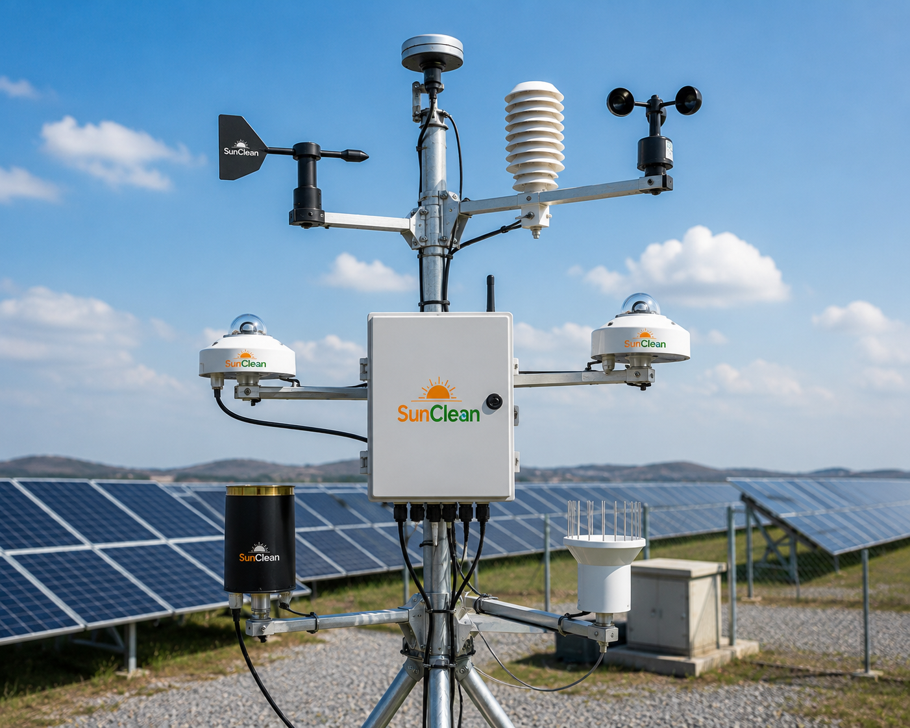
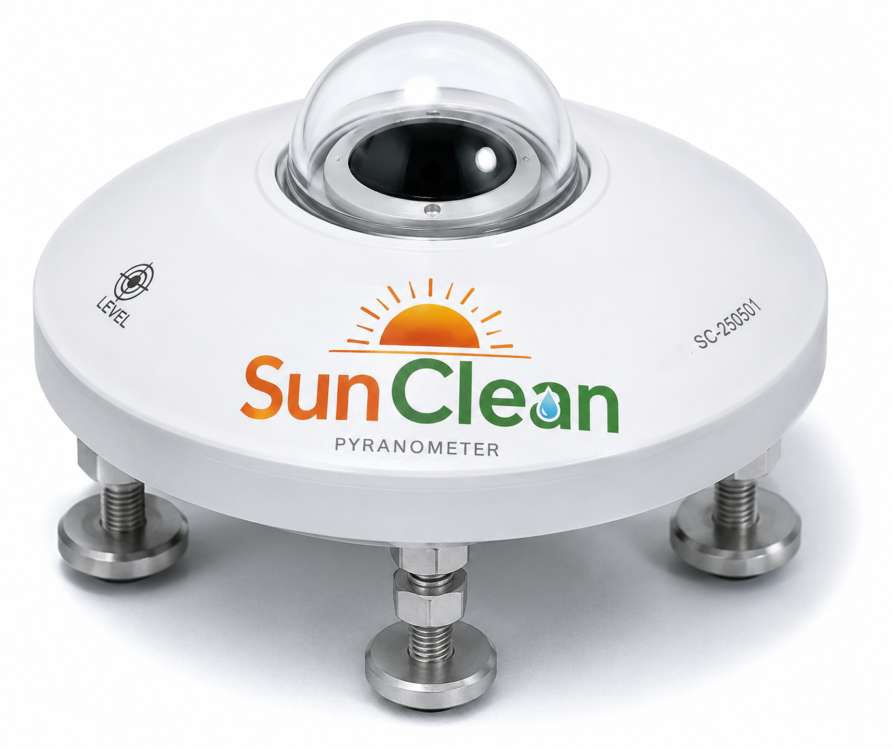
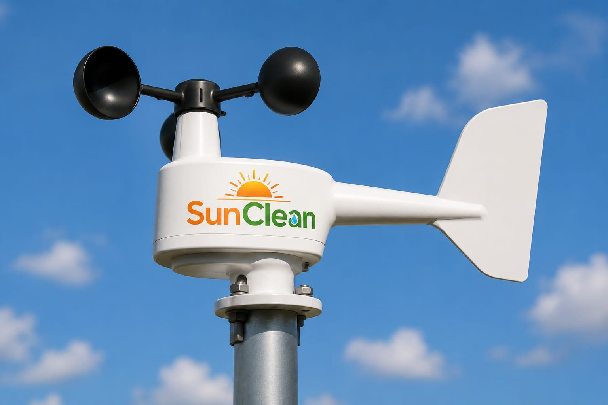
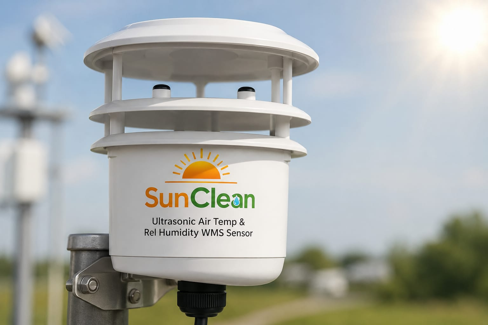
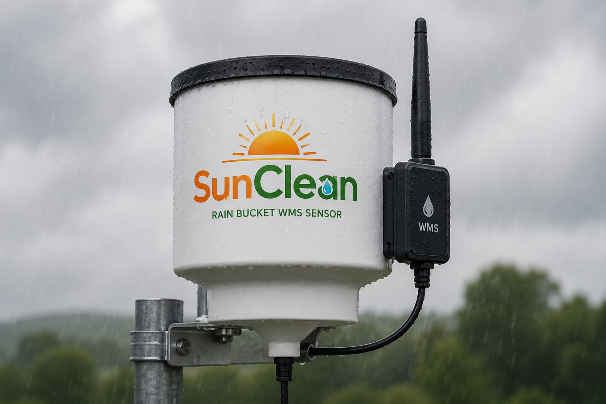
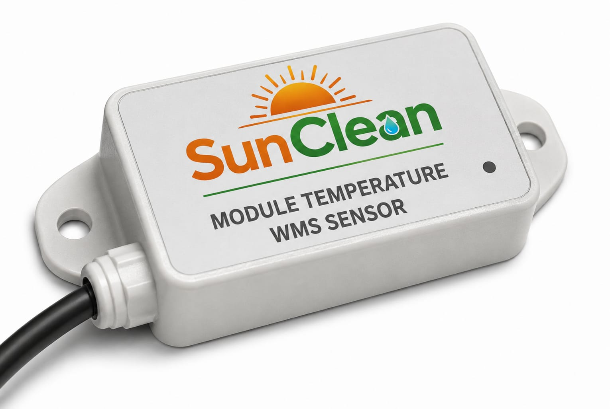
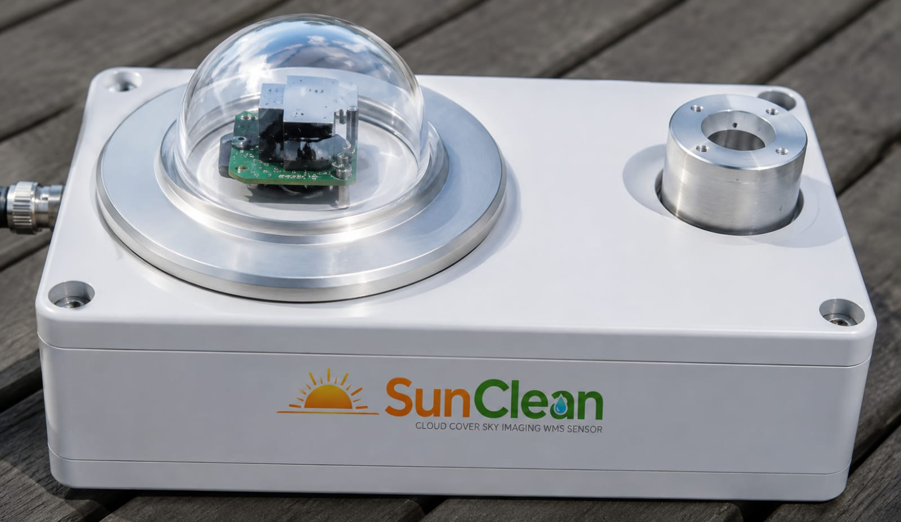
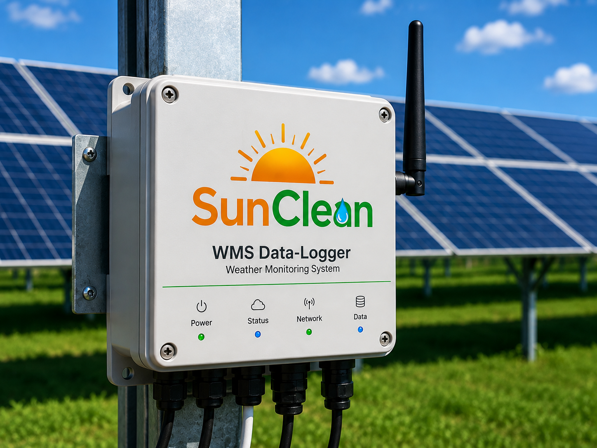
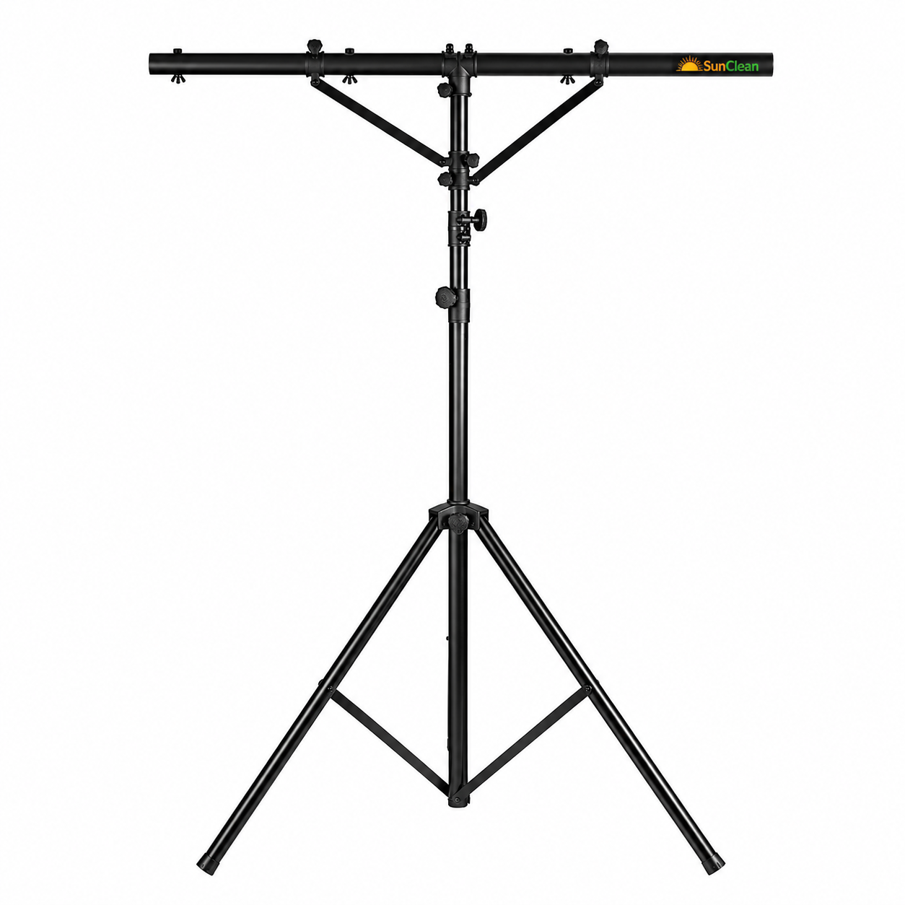

Weather Monitoring System (WMS)
for Accurate Solar Plant Performance
A Weather Monitoring System is one of the most critical components of any utility-scale solar plant. SunClean provides complete Supply, Installation, Testing & Commissioning (SITC) of WMS for accurate irradiance, environmental, and module temperature data.

Precision sensors for every parameter
Our weather monitoring system includes all hardware, sensors, mounting structures, data logger, and communication equipment — delivered on complete SITC basis.

Solar Irradiance Monitoring
Pyranometer · GHI · POA
The Pyranometer is the primary sensor used for measuring solar irradiance received by the solar plant. It provides highly accurate solar radiation data that serves as the foundation for performance analysis and energy yield calculations.
Applications
- Solar resource assessment
- Performance Ratio (PR) calculations
- Plant efficiency analysis
- Generation forecasting
- SCADA integration
Key Features
- High measurement accuracy
- Industry-standard output signals
- Suitable for utility-scale solar plants
- MODBUS / analog output
- Long-term reliability
Pyranometer make shall be selected based on project specifications, approved vendor list, or client requirements.

Wind Monitoring
Speed
The Wind Speed Sensor continuously measures wind velocity at the site.
Applications
- Environmental monitoring
- Structural safety assessment
- Operational planning
- Weather forecasting
Advantages
- Accurate measurements
- Rugged outdoor construction
- Reliable long-term operation
- SCADA compatible
Wind Monitoring
Direction Sensors
The Wind Direction Sensor identifies the direction from which the wind is blowing.
Applications
- Weather analysis/li>
- Site environmental studies
- Operational planning
- Safety assessments
Advantages
- Precise directional measurement
- Maintenance-free design
- Suitable for harsh environments

Ambient Temperature & Relative Humidity Sensor
This sensor continuously monitors surrounding air temperature and relative humidity levels..
Applications
- Environmental condition monitoring
- Performance analysis
- Weather reporting
- Plant efficiency studies
Advantages
- High accuracy measurement
- Radiation shield protection
- Reliable outdoor performance
- SCADA integration ready

Rain Sensor
The Rain Sensor detects rainfall events and provides instant status updates to the monitoring system.
Applications
- Weather monitoring
- Cleaning activity assessment
- Environmental analysis
- Plant operation planning
Advantages
- Fast rain detection
- Low maintenance
- Reliable operation
- Real-time monitoring

Module Temperature Sensor
IEC Performance Calculations
Module temperature is one of the most important parameters influencing solar plant performance.
The Module Temperature Sensor continuously measures the operating temperature of solar PV modules.
Applications
- Performance ratio (PR) calculations
- Temperature loss analysis
- Energy yield modeling
- Performance monitoring
Key Features
- Accurate measurement
- Rugged outdoor design
- Reliable long-term performance
- Essential for IEC standards

Cloud Cover Sensor
Sky Condition Monitoring
The Cloud Cover Sensor measures cloud movement and sky conditions that impact solar generation.
Applications
- Generation forecasting
- Weather analysis
- Plant performance assessment
- Irradiance variation monitoring
Advantages
- Improved forecasting accuracy
- Real-time sky condition
- Enhanced operational planning

Data Logger & Communication
SCADA Integration Ready
The Data Logger acts as the central controller of the Weather Monitoring System.
It collects data from all connected sensors, stores information securely, and communicates with SCADA and monitoring platforms.
Functions
- Sensor data acquisition
- Data storage & processing
- Alarm generation
- Remote communication
Advantages
- Industrial-grade reliability
- Multi-sensor integration
- Long-term data storage
- Remote monitoring capability
Mounting Structures + Electrical Protection
Corrosion-resistant mounting infrastructure with surge protection, lightning arresters, and weatherproof junction boxes for reliable outdoor operation.

Mounting Infrastructure
Robust and corrosion-resistant mounting infrastructure designed for accurate weather monitoring and long-term outdoor operation in utility-scale solar plants.
- Sensor mounting structures
- Pyranometer mounting arrangements
- Weather-resistant support structures
- Corrosion-resistant fabrication
- Surge Protection Devices (SPD)
- Lightning protection systems
- Earthing arrangements
- UV-resistant cabling
- Weatherproof junction boxes
Supply, Installation, Testing & Commissioning
SunClean provides end-to-end WMS deployment — from sensor supply to SCADA integration and operator handover.
Trusted by utility-scale solar projects
Complete SITC Execution
End-to-end responsibility
Utility-Scale Experience
Proven in large solar parks
High Accuracy Measurements
Class-leading sensors
SCADA Compatible Systems
Seamless integration
Field-Proven Components
Reliable in harsh environments
Customized per Specs
Approved vendor list flexibility
Technical Support
Commissioning assistance
Performance Optimization
Better decisions from accurate data
Reliable weather and irradiance data are essential for maximizing energy generation and understanding true plant performance. SunClean's WMS provides the accurate measurements required for modern solar asset management.
Accurate Data. Better Decisions. Higher Performance.
Optimize your solar plant with precision weather intelligence
Get a complete WMS solution tailored to your project specifications — from sensor selection to SCADA integration.